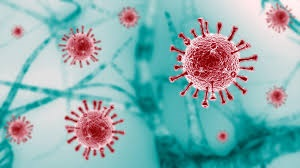

Our Services
With its offices in Nottingham, UK, Saylani Welfare raises funds, as well as raising awareness of a range of charity projects. Services by Saylani (NGO) are provided free of cost
The Roti Bank provides free meals to needy families in a simple walk-up kiosk along a main thoroughfare in Karachi. After providing their identification, details of family size (via birth certificates) and getting the Saylani "Free Food Card", the families can get 2 meals per day for a month

During the COVID-19 crisis, Saylani Welfare Trust provided free oxygen, food, rescue equipment and other supplies to hospitals and Covid-19 wards in the country.[14] It also introduced mobile phone application and telephone service, where needy families can register themselves to get ration and other essential itemsgo back to the list
| Day | 5-6 | 6-7 | 7-8 | 8-9 | 9-10 |
|---|---|---|---|---|---|
| Monday | Fajer | Quran | scholl drop | class | |
| Tusday | Aram | Nashta | |||
| Wednesday | Quran | scholl drop | home work | ||